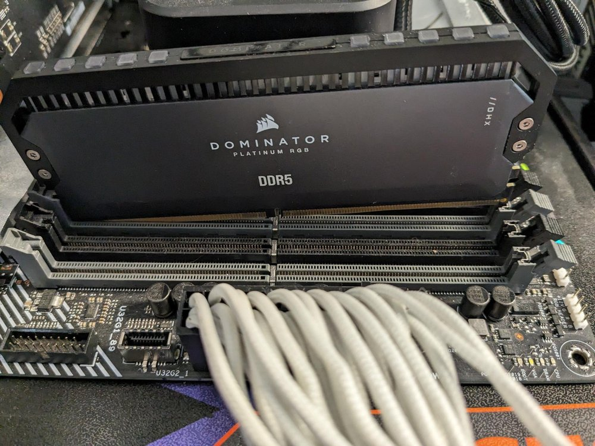

La arquitectura de un computador está constituida por el conjunto de funcionalidades disponibles para un programador que utiliza el lenguaje máquina, básicamente, el repertorio de instrucciones y los elementos de memoria referenciados desde él, es decir, los registros generales y la memoria principal. Las funcionalidades de una arquitectura se pueden conseguir con diferentes organizaciones internas o estructuras, diferenciándose unas de otras fundamentalmente en los parámetros de rendimiento y el coste. Finalmente, la estructura de un computador se puede implementar con diferentes tecnologías, siendo nuevamente el coste y el rendimiento los elementos diferenciales. Arquitectura, estructura y tecnología constituyen, pues, tres niveles de estudio del hardware de un computador.